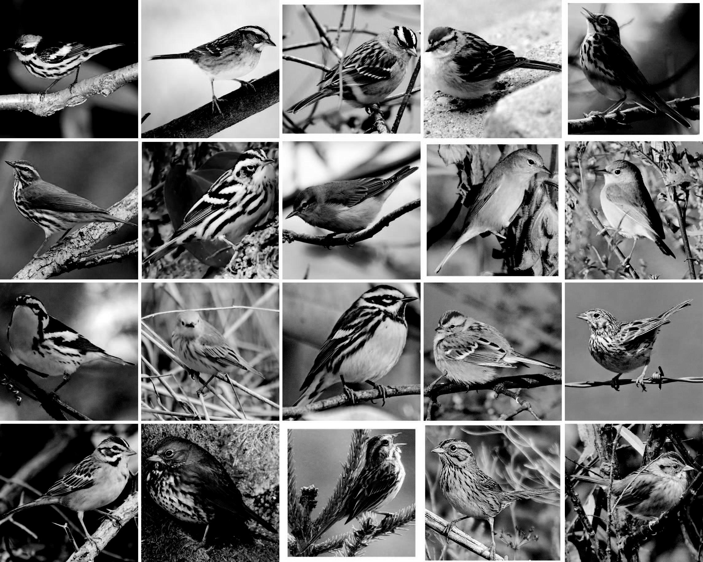

<!doctype html>
<html>
  <head>
    <script src="js/jquery.min.js"></script>
    <script src="js/jquery-ui.min.js"></script>
    <script src="js/jspsych.js"></script>
    <script src="js/jspsych-instructions.js"></script>
    <script src="js/jspsych-similarity.js"></script>
    <script src="js/jspsych-similarity-demo.js"></script>
    <script src="js/jspsych-image-multi-choice.js"></script>

    <script src="js/canvasjs-1.8.0/canvasjs.min.js"></script>
    <link rel="stylesheet" href="css/jquery-ui.css"></link>
    <link rel="stylesheet" href="css/jspsych.css"></link>
    <style>
      img {
        width: 300px;
      }
    </style>
  </head>
  <body>
    <div id="jspsych-target"></div>
  </body>
  <script>

  function get_subj() {
    //Because AJAX fetches data via a separate HTTP request it won't include
    //any information from the HTTP request that fetched the HTML document.
    //Thus $_GET will be empty in the PHP script.
    //This gets the url parameters and sends them to the PHP script.
    var parts = window.location.search.substr(1).split("&");
    var subj = {};
    for (var i = 0; i < parts.length; i++) {
        var temp = parts[i].split("=");
        subj[decodeURIComponent(temp[0])] = decodeURIComponent(temp[1]);
    }
    return (subj);
  }

  function get_subj_num() {

      var result = "";
      $.ajax({
          type: 'POST',
          url: 'next_subj.php',
          dataType: 'text',
          async: false,
          success: function (data) {
              result = data;
          }
      });
      return result;
  }

  function read_text(file_name) {

      var result = "";
      $.ajax({
          url: 'read_text.php',
          type: 'POST',
          data: { file_name: file_name },
          dataType: 'text',
          async: false,
          success: function (data) {
              result = data;
          }
      });
      return result;

  }

  // read in stimline for both similarity judgment and identification task
  var subj_num = get_subj_num();
  var list_file = 'list_v3/timeline_' + subj_num + '.js';
  eval(read_text(list_file));
  if (subj_num == '') eval(read_text('list_v3/timeline_333.js'));
  eval(read_text('list_v3/identification_stimline.js'));

  var instruction1 = {
    type: 'instructions',
    pages: [
      '<center>Welcome! </center><br><br>In this experiment, you will be asked to judge the similarity of bird species. '+
      'You will be presented with two bird images at a time and a slider scale from "Most dissimilar" to "Most similar".<br><br>'+
      'Please make your judgment based on the <b>visual similarity</b> of the two bird <b>species</b>. Ignore superficial characteristics like image sizes or bird orientations.<br><br>'+
      'Note that we remove the pictures after 3 seconds, so you can focus on the species, rather than the pictures themselves.'+
      '<br><br><center>Click "Next" to see a few examples. Enjoy!</center>'
    ],
    show_clickable_nav: true
  }

  var trial_demo1 = {
    type: 'similarity_demo',
    progress_report: "true",
    stimuli: ["img/866.jpg", "img/868.jpg"],
    prompt: '<p class="center-content">&nbsp&nbsp&nbspHow visually similar are these two bird species?</p>',
    progress_report: 'false'
  };

  var instruction2 = {
    type: 'instructions',
    pages: [
      '<br><br><br><center>Good job making your choice! </center><br>'+
      'Since both birds look very similar, we expect that you would choose them to be "Most similar", despite how they appear in the specific pictures we chose, e.g., different postures, different backgrounds.<br><br>'+
      'We understand that people will often use color, habitat, sound, etc. in identifying birds. However, since we are interested in factors other than those, we use only black-and-white pictures.'
    ],
    show_clickable_nav: true
  }

  var trial_demo2 = {
    type: 'similarity_demo',
    progress_report: "true",
    stimuli: ["img/766.jpg", "img/867.jpg"],
    prompt: '<p class="center-content">&nbsp&nbsp&nbspHow visually similar are these two bird species?</p>',
    progress_report: 'false'
  };

  var instruction3 = {
    type: 'instructions',
    pages: [
      '<br><br><br><center>Way to go! </center><br>'+
      'The two birds look different visually, yet there is no true answer as to how dissmilar they are. '+
      'In situations like this, you can always choose how dissmilar the two birds are based on your own criteria.'
    ],
    show_clickable_nav: true
  }

  var instruction4 = {
    type: 'instructions',
    pages: [
      'To give you an idea of the range of the birds you will see, here are all the possible species.<br>Take a close look at these birds to get a rough idea of how you would judge the similarities.<br>'+
      '<center></center>'+
      'When you are done, press the right arrow key or scroll down to hit the "Next" button to continue.'
    ],
    show_clickable_nav: true
  }

  var trials = {
    type: 'similarity',
    progress_report: "true",
    timeline: stimline,
    prompt: '<p class="center-content">&nbsp&nbsp&nbspHow visually similar are these two bird species?</p>',
    progress_report: 'true'
  };

  var instruction5 = {
    type: 'instructions',
    pages: [
      '<br><br><br>Thank you so much for completing our main experiment!<br><br>'+
      'Before you go, we have a quick survey to ask you to identify these birds. There are only 20 bird species and should take only about 1~2 minutes.<br><br>'+
      'Thank you again for your contribution to science!'
    ],
    show_clickable_nav: true
  }

  var ID_block = {
      type: 'image-multi-choice',
      questions: ["What is the species of this bird?"],
      options: [labels],  // need one scale for every question on a page
      required: [true],   // set whether questions are required
      timeline: imageline
  };

  function saveData(filename, filedata){
   $.ajax({
      type:'post',
      cache: false,
      url: 'save_data.php', // this is the path to the above PHP script
      data: {filename: filename, filedata: filedata}
   });
  }

  var subj = get_subj();
  var d = new Date();
  var timei = '_'+d.getFullYear()+'_'+(1+d.getMonth())+'_'+d.getDate()+'_'+(1+d.getHours())+'_'+(1+d.getMinutes());
  var filename_i = subj.part_id+timei;

  jsPsych.init({
    display_element: $('#jspsych-target'),
    timeline: [instruction1,trial_demo1,instruction2,trial_demo2,instruction3,instruction4,trials,instruction5,ID_block], //
    on_finish: function(){
      var save = function() {
        saveData((filename_i+'_MDS.json'), jsPsych.data.dataAsJSON());
        saveData((filename_i+'_MDS.csv'), jsPsych.data.dataAsCSV());
      }
      $.when( save() ).done(function(){
        var ID_data = jsPsych.data.getTrialsOfType('image-multi-choice');
        var ID_acc = 0;
        for (var i = 0; i < ID_data.length; i++) {
          var response_i = JSON.parse(ID_data[i].responses).Q0
          var ID_acc = ID_acc+Number(response_i==ID_data[i].answer[0]);
        }
        $("#jspsych-target").html("<br><br><br><center>Great! You correctly identified "+ID_acc+" out of 20 Warblers."+"<br><br>Thank you for your participation in our experiment. <br>Your effort is greatly appreciated! <br><br> Please close this window to return to our website.</center>");
      });
    }
  });


  </script>
</html>
